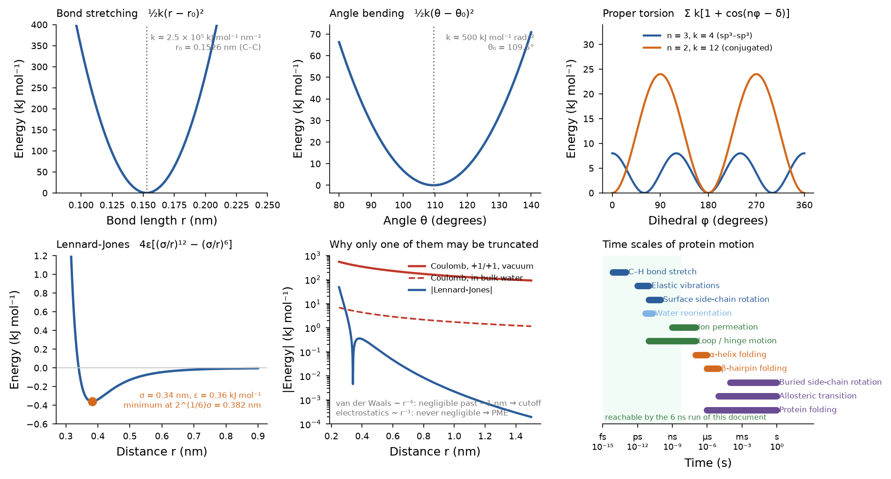
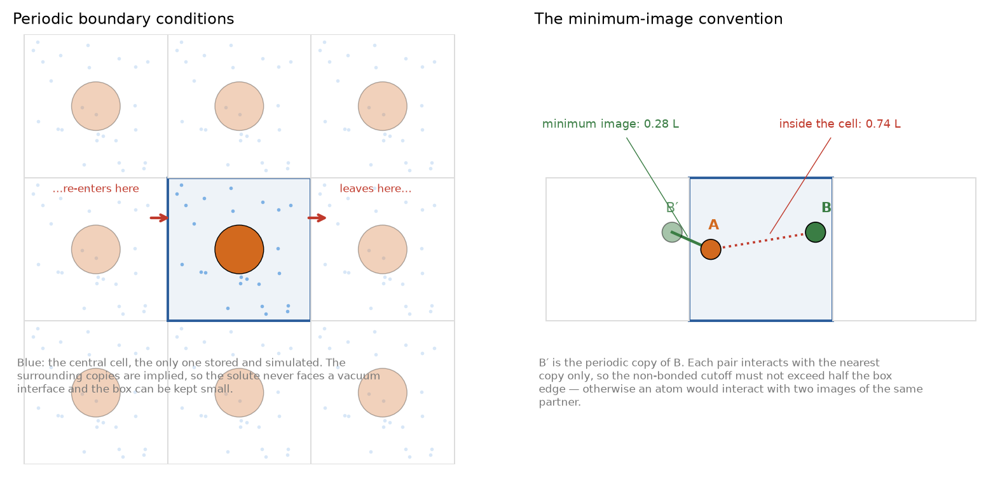
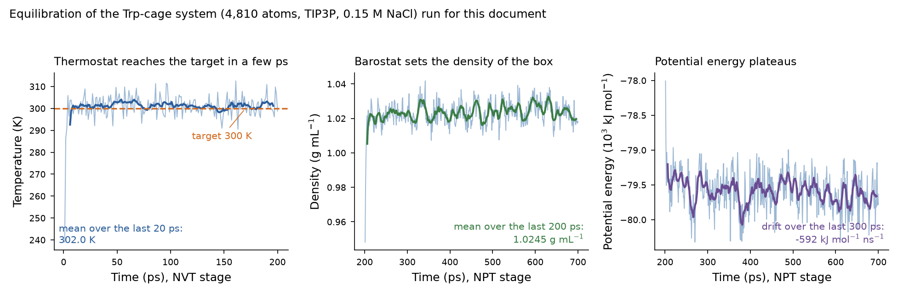
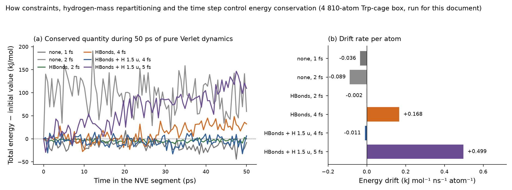
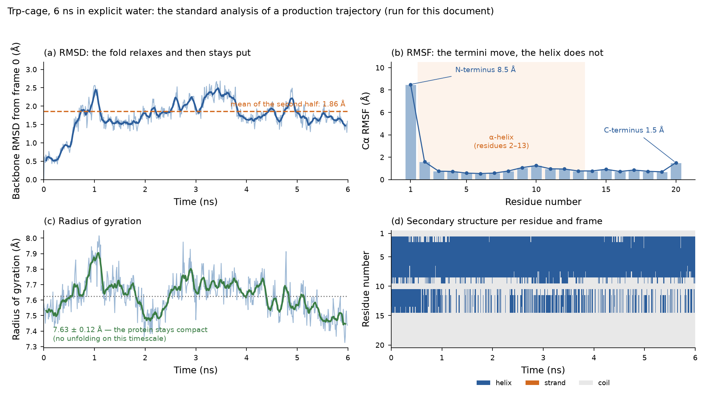

This document expands the fifth and last lecture of the module, and closes the chain that began with a sequence. Units 2–4 produced static pictures: a structure, a pose, a predicted affinity. Molecular dynamics removes the "static": it integrates Newton's equations for every atom and produces a trajectory — a film of the system at femtosecond resolution — from which thermodynamic and kinetic properties can be computed. Sections 6 and 7 report a complete simulation performed for this document: the 20-residue mini-protein Trp-cage in explicit water, minimised, equilibrated and simulated for 6 ns with OpenMM, plus a controlled experiment on timestep and constraints whose numbers explain why every protocol in the field looks the way it does.
Learning objectives
- Explain what statistical mechanics licenses: how a trajectory of a microscopic system yields macroscopic observables.
- Write Newton's equation for an atom in a force field and describe how the Verlet family of integrators advances it.
- Justify the choice of timestep from the fastest vibration, and explain how constraints and hydrogen-mass repartitioning allow a larger one.
- Write out the terms of a classical force field and identify what each parameter controls.
- Explain why non-bonded interactions dominate the cost, which of them may be truncated, and what PME does.
- Compare explicit and implicit solvent, describe periodic boundary conditions and the minimum-image convention.
- Distinguish the NVE, NVT and NPT ensembles and name the thermostats and barostats used for each.
- Execute and justify the six steps of a standard protocol, and judge from the output whether a system is equilibrated.
- Compute and interpret RMSD, RMSF, radius of gyration, secondary-structure evolution and interaction fingerprints.
- State the main limitations of classical MD — timescale, fixed bonding and protonation, force-field error, sampling — and recognise them in published work.
- Place MM/GBSA, alchemical free-energy methods and PMF calculations on a scale of cost and accuracy, and choose between them.
Section 1Why simulate
The lecture opens with the reason the whole field exists: experiment is sometimes impossible, sometimes too slow, sometimes too expensive, and almost always blind to the atomic detail of a process in motion. A crystal structure is a time- and space-average over 1015 molecules; an NMR ensemble is a set of models consistent with averaged restraints; a kinetic measurement reports a rate without saying what moves. Simulation supplies the missing trajectory[32][33], and the bridge that makes it meaningful is statistical mechanics: the macroscopic observables of thermodynamics are averages over the microscopic states that the system visits.
With that bridge, a trajectory yields quantities an experiment measures — binding free energies, diffusion coefficients, order parameters, NMR relaxation rates, heat capacities — and quantities no experiment can see: which water molecule bridges a ligand to a residue, how long a hydrogen bond survives, which conformational substate a mutation stabilises, what path an ion takes through a channel. The lecture's own examples are of the second kind: the TASK-2 potassium channel, where simulations showed how the protonation of a single lysine changes the dimensions of the membrane-facing fenestrations and the energetics of ion access.
In the context of this module, molecular dynamics plays three concrete roles. It refines and validates models: a homology model (Unit 2) or a docking pose (Unit 3) that drifts apart in a few nanoseconds was probably wrong. It generates ensembles for ensemble docking and for cryptic-site detection (Units 3 and 4). And it estimates affinities with the free-energy methods of Section 9, which are the only computational approach that reaches experimental accuracy for congeneric series.
Section 2The equations of motion
2.1 Newton and the integrator
Each atom i is a point of mass mi and fixed partial charge qi at position ri. The potential energy of the whole system is a single function of all the coordinates, U(r1, …, rN) — the force field of Section 3 — and the force on each atom is its negative gradient:
This is a set of 3N coupled second-order differential equations with no analytical solution for N > 2, so it is integrated numerically in discrete steps. Two properties of the physical system should be reproduced by the integrator: total energy (kinetic plus potential) is conserved in an isolated system, and the equations are time-reversible. Algorithms that respect the geometric structure of Hamiltonian mechanics — symplectic integrators — conserve energy over long times far better than higher-order general-purpose solvers such as Runge–Kutta, which is why the field uses the Verlet family and not the methods of a numerical-analysis course.
The kinetic energy connects the trajectory to temperature through equipartition:
As the lecture notes, in arrangements of lower potential energy the atoms move faster, because the total is conserved; and in practice the total energy drifts slowly upward because of finite-precision arithmetic and the finite timestep, which is one of the reasons a thermostat is used (Section 4.3). Section 6.3 measures that drift.
2.2 The Verlet algorithm and its variants
Expanding the position in Taylor series forward and backward in time,
r(t−δt) = r(t) − v(t)δt + ½a(t)δt² − … Adding the two expansions cancels the odd terms, including the velocity, and gives the position Verlet algorithm with an error of order δt⁴.
Each step needs the positions at the two previous times and the current acceleration — that is, one force evaluation, which is where essentially all the computer time goes. The algorithm is time-reversible and symplectic, and velocities, if needed, are obtained by central difference. Because that estimate of the velocity lags, two algebraically equivalent reformulations are preferred in practice: leapfrog, which stores velocities at half steps, and velocity Verlet, which computes positions and velocities at the same time and is the usual default. Langevin integrators (used in Section 6) add a friction and a random force to the same scheme in order to control the temperature.[1],[2]
2.3 The timestep
The timestep must resolve the fastest motion in the system. The rule of thumb is δt ≤ 1/10 of the shortest vibrational period; the fastest motion in a biomolecule is the stretching of bonds to hydrogen — a C–H stretch has a period of about 10 fs (ν̃ ≈ 3,000 cm⁻¹) — which gives δt ≈ 1 fs. Since the number of steps needed for a given physical time is inversely proportional to δt, extending the timestep is the cheapest possible speed-up, and three standard tricks do it:
- Constrain bonds to hydrogen (SHAKE, RATTLE, LINCS, and SETTLE for rigid water) and the fastest remaining motion becomes heavy-atom bond stretching, allowing δt = 2 fs.[3],[4]
- Hydrogen-mass repartitioning: move mass from the heavy atom to the hydrogens it carries (typically to 1.5–4 u), slowing the angle and torsion motions that involve hydrogens without changing the total mass or the thermodynamics, which allows δt = 4 fs.[5]
- Multiple timestepping (RESPA): evaluate the expensive long-range electrostatics less often than the cheap bonded terms.
Section 6.3 measures the energy drift for each of these choices on the actual system, which is the empirical justification for the protocol used everywhere in the field.
Section 3The force field
3.1 Functional form
A force field is a potential energy function plus the parameters that go in it. The lecture's image is the right one: the molecule is modelled as charged spheres connected by springs. Nothing in it is quantum mechanical — there are no electrons, bonds cannot break, and the parameters are fitted to reproduce experimental and quantum-chemical data for small molecules. The classical ("Class I") form used by AMBER, CHARMM, OPLS and GROMOS is:
+ Σi<j 4εij[(σij/rij)12 − (σij/rij)6] + Σi<j qiqj/(4πε0εrrij)

Four properties of this function are worth stating explicitly, because they are the origin of most of the method's limitations. The bonded terms define the topology: which atoms are bonded to which is fixed at the start and cannot change. The charges are fixed point charges, so the electronic response of a molecule to its environment — polarisation — is absent and is instead folded, on average, into the fitted values. Torsion terms are the fitting dustbin: they are parameterised last, to make the total reproduce quantum-chemical conformational energies after the other terms are set. And the non-bonded sums run over all pairs, which is where the cost is.
3.2 The main force-field families
| Family | Current protein versions | Notes |
|---|---|---|
| AMBER | ff14SB, ff19SB; ligands via GAFF2 or OpenFF | Parameterised against quantum-chemical conformational energies and condensed-phase properties; ff19SB adds amino-acid-specific backbone corrections[6],[7] |
| CHARMM | CHARMM36m; CGenFF for ligands | Extensive lipid and carbohydrate coverage; CHARMM36m was refined for intrinsically disordered proteins[8] |
| OPLS | OPLS-AA/M, OPLS4 | Optimised against liquid-phase thermodynamics; strong small-molecule coverage |
| GROMOS | 54A7, 2016H66 | United-atom (non-polar hydrogens absorbed into carbons), so fewer particles |
| Water models | TIP3P, TIP4P-Ew, TIP4P/2005, SPC/E, OPC | Must be matched to the protein force field it was parameterised with; TIP3P is standard with AMBER/CHARMM but has too low viscosity, which accelerates diffusion |
| Polarisable | AMOEBA, Drude-2019, CHARMM-Drude | Explicit induced dipoles; 5–10× more expensive; needed for highly charged sites and ion channels |
The practical rules are to use a protein force field with the water model it was validated with, to never mix force fields within one system, and to record exact versions — results change measurably between them, and a published trajectory without its force-field version is not reproducible.
3.3 Non-bonded cost, cutoffs and PME
The number of bonded terms grows linearly with N; the number of non-bonded pairs grows as N(N−1)/2, so the non-bonded part dominates. For the modest system of Section 6 — 4,810 atoms — that is about 1.2 × 10⁷ pairs per step, and a 6 ns run at 4 fs needs 1.5 × 10⁶ steps.
The dispersion term decays as r⁻⁶, so truncating it at 0.9–1.2 nm and applying an analytical long-range correction costs almost nothing in accuracy, and a neighbour list rebuilt every 10–20 steps reduces the search from O(N²) to O(N). The cutoff should be applied smoothly — shifted or switched over the last 0.1–0.2 nm — because a hard truncation leaves a discontinuity in the force that pumps energy into the system.
Electrostatics cannot be truncated: the Coulomb term decays as r⁻¹, and truncating it produces well-documented artefacts — spurious ordering of water and ions at the cutoff radius, incorrect salt-bridge lifetimes, distorted membrane properties. The standard solution is particle-mesh Ewald (PME), which splits the Coulomb sum into a short-range part evaluated directly in real space and a smooth long-range part evaluated by fast Fourier transform on a grid in reciprocal space, giving the full periodic lattice sum at a cost of O(N log N).[9],[10] Every simulation in this unit uses PME, and so should essentially every simulation of a charged biomolecular system.
Section 4Solvent, boundaries and ensembles
4.1 Solvent models
As the lecture insists, ignoring the solvent produces major artefacts: without water the hydrophobic effect vanishes, charged side chains collapse onto each other, and the protein shrinks. Two representations are available.
| Explicit solvent | Implicit solvent | |
|---|---|---|
| Representation | Every water molecule and ion is a particle with coordinates | A continuum of dielectric constant ≈ 80, with a surface-area term for the non-polar part (Generalised Born or Poisson–Boltzmann) |
| Cost | Dominates the atom count — in the system of Section 6, 4,506 of 4,810 atoms are solvent | Negligible in particle count, though the GB/PB evaluation itself is not free |
| Captures | Hydrogen bonds to water, bridging and buried waters, specific ion binding, the hydrophobic effect, solvent viscosity | Average electrostatic screening and solvation free energy |
| Misses | Nothing in principle; needs hundreds of ps of equilibration for the water to order | Water-mediated contacts (the flap water of Unit 3 would disappear), ion pairing, viscosity — so kinetics are wrong and conformational barriers are too low |
| Use for | Binding sites, ion channels, membranes, anything where water structure matters | Fast conformational scans, loop refinement, MM/GBSA rescoring (Section 9.2) |
Membrane proteins require a third component: a lipid bilayer, built with CHARMM-GUI or equivalent, equilibrated so that the area per lipid matches experiment before the protein is allowed to move. The lecture's TASK-2 simulations are of this type, and they illustrate why: the fenestrations of the channel open toward the bilayer, lipid tails penetrate into them, and nothing of that behaviour exists in a simulation without a membrane.
4.2 Periodic boundary conditions
A finite droplet of water has a surface, and a surface is an artefact: water at a vacuum interface is ordered differently from bulk water, and a solute will seek that interface. The solution is to make the system formally infinite by replicating the simulation cell in all directions — periodic boundary conditions. An atom that leaves through one face re-enters through the opposite one, so the number of particles is conserved and no interface exists.

Two further practicalities follow. Cubic boxes waste solvent on the corners for a roughly globular protein, so truncated octahedron or rhombic dodecahedron cells, which give the same minimum image distance with ~70 % of the volume, are preferred for production work. And the system must be neutralised: PME with a net charge introduces a uniform neutralising background whose effect on the energetics is an artefact, so counter-ions are added to bring the total charge to zero, usually together with enough salt to reach a physiological 0.10–0.15 M.
4.3 Thermostats, barostats and ensembles
Integrating Newton's equations as written conserves energy and samples the microcanonical (NVE) ensemble — constant number of particles, volume and energy. Laboratory experiments are not done at constant energy, so the equations are modified to sample the ensemble of interest.
| Ensemble | Constant | How it is achieved | Used for |
|---|---|---|---|
| NVE (microcanonical) | N, V, E | Plain Verlet integration, no coupling | Testing integrator accuracy and energy conservation (Section 6.3); rarely for production |
| NVT (canonical) | N, V, T | Thermostat: velocity rescaling (Berendsen — fast but does not give the correct ensemble), Bussi–Donadio–Parrinello stochastic rescaling, Nosé–Hoover (deterministic, extended system), Langevin or Andersen (stochastic)[11],[12] | Heating and the first equilibration stage; systems where the volume must stay fixed |
| NPT (isothermal–isobaric) | N, P, T | Thermostat plus a barostat that rescales the box: Berendsen, Parrinello–Rahman, Monte Carlo barostat | The standard production ensemble, because laboratory conditions are constant temperature and pressure |
Two cautions about thermostats are standard knowledge in the field and standard mistakes in student work. The Berendsen thermostat and barostat relax to the target smoothly but do not reproduce the correct fluctuations, so they are acceptable for equilibration and not for production. And applying a thermostat to a system with a net momentum or with inhomogeneous heating produces the "flying ice cube" artefact, where the thermostat drains the internal degrees of freedom while the whole system translates; removing centre-of-mass motion periodically prevents it.
Section 5A simulation protocol, step by step
The lecture's six steps, with the decisions each one involves.
- System preparation. Choose and clean the structure (Unit 2, Section 4.4): select chains and the biological assembly, model missing loops, decide about crystallographic waters, assign protonation states of His, Asp, Glu, Lys and Cys at the simulation pH, build disulfide bonds, add hydrogens. Assign atom types, partial charges and connectivity from the force field (the topology) and the associated force constants (the parameters). For a non-standard ligand, parameters must be generated (GAFF2/antechamber, CGenFF, OpenFF) and checked — this is where most errors enter a simulation. Build the box, solvate, neutralise and add salt.
- Minimisation. The experimental structure was refined against data with a different energy function, so under the force field it contains small clashes that would launch atoms at implausible velocities. Steepest descent for a few thousand steps removes the worst; conjugate gradient or L-BFGS converges more efficiently afterwards. Minimisation finds the nearest local minimum, not the global one — it is a repair step, not a search. Typically the protein is restrained first while only solvent relaxes, then the restraints are released.
- Heating. Velocities are assigned from a Maxwell–Boltzmann distribution at a low temperature and the system is warmed to the target over tens to hundreds of picoseconds, usually with positional restraints on the solute so that the solvent reorganises around a fixed structure.
- Equilibration. NVT first to settle the temperature, then NPT to settle the density and box volume, with the restraints released gradually. The system is equilibrated when the monitored quantities have stopped drifting (Section 6.2) — not when a fixed time has elapsed.
- Production. The trajectory that will be analysed, run in the chosen ensemble with no restraints, saving coordinates every 1–100 ps. Independent replicas with different initial velocities are strongly preferable to one long run of the same total length, because they sample independent starting points and allow an error estimate.
- Analysis. Section 7.
What to write down, every time
Force field and version for protein, ligand, lipids and ions; water model; box type and padding; ionic strength and neutralising ions; protonation states that differ from the default and how they were decided; cutoffs, electrostatics method and grid spacing; constraints and hydrogen masses; timestep; thermostat and barostat with their coupling constants; the length of each stage; number of replicas and random seeds; software version. A paper without these is not reproducible, and most of the questions a reviewer asks about a simulation are answered by this list.
Section 6A simulation run for this document
6.1 System and protocol
To make the protocol concrete, a complete simulation was carried out for this document with OpenMM 8.6.1.[13] The system is the Trp-cage miniprotein TC5b (PDB 1L2Y, NMR), a 20-residue designed peptide[30] that folds autonomously in microseconds and is the standard test system of the folding-simulation literature. Its small size is what makes a full protocol reproducible on a laptop; everything below runs on CPU in a few hours.
| Choice | Value | Reason |
|---|---|---|
| Structure | PDB 1L2Y, model 1, hydrogens added at pH 7 with PDBFixer | Small, well characterised, experimentally determined |
| Force field | AMBER ff14SB protein + TIP3P-FB water | Standard, validated combination |
| Box and solvent | Cubic, 1.0 nm padding → 3.7498 nm edge; 4,810 atoms total, of which 4,506 are solvent; 0.15 M NaCl, neutralised | Padding ≥ cutoff; physiological salt |
| Non-bonded | PME, 1.0 nm real-space cutoff | Electrostatics cannot be truncated (Section 3.3) |
| Constraints | Bonds to hydrogen constrained, rigid water, hydrogen mass 1.5 u | Permits a 4 fs timestep (Section 6.3) |
| Integrator | Langevin middle, 300 K, friction 1 ps⁻¹, δt = 4 fs | Thermostatted, stable, standard |
| Protocol | Minimisation → 200 ps NVT → 500 ps NPT (Monte Carlo barostat, 1 bar) → 6 ns NPT production, frames every 10 ps | The six steps of Section 5 |
| Performance | 89.7 ns/day on 10 CPU threads | For reference when planning a run |
Minimisation alone lowered the potential energy from −15,893.0 to −91,585.8 kJ mol⁻¹ — a change of −75,692.8 kJ mol⁻¹, almost all of it from relieving clashes between the freshly added hydrogens and the freshly placed water. That number is a useful calibration: it is far larger than any energy difference the simulation will later be asked to resolve, which is why minimisation is mandatory and why one never interprets absolute potential energies.
6.2 Equilibration: knowing when to start measuring

Equilibration is a property of the observable, not of the clock. Temperature equilibrates in picoseconds, density in tens of picoseconds, the solvation shell in hundreds, and a side-chain rotamer distribution or a loop conformation may not equilibrate at all within the reach of the run. The honest practice is to plot the quantity that the study depends on and to discard the portion over which it drifts — and to say in the methods how much was discarded.
6.3 Energy conservation, the timestep and constraints
The second experiment performed for this document measures directly what Section 2.3 asserts. Starting from the equilibrated system, six short simulations were run in the NVE ensemble — plain Verlet, no thermostat, so that any change in total energy is pure integration error — with different timesteps and constraint settings. Each system was built, minimised and thermalised for 100 ps in its own constraint and mass settings, then integrated with plain Verlet for 10 ps of settling plus 50 ps of measurement; the drift is the slope of a linear regression of the total energy over the measurement window, reported per atom, the standard way to compare systems of different size.
| Timestep | Constraints | Hydrogen mass | Drift (kJ mol⁻¹ ns⁻¹ atom⁻¹) | Drift (kJ mol⁻¹ ns⁻¹) | RMS fluctuation of Etot (kJ mol⁻¹) | Verdict |
|---|---|---|---|---|---|---|
| 1 fs | none (all bonds flexible) | 1.008 u | −0.0357 | −172 | 9.5 | not acceptable |
| 2 fs | none (all bonds flexible) | 1.008 u | −0.0890 | −428 | 35.8 | not acceptable |
| 2 fs | bonds to hydrogen + rigid water | 1.008 u | −0.0022 | −11 | 2.9 | acceptable |
| 4 fs | bonds to hydrogen + rigid water | 1.008 u | +0.1683 | +809 | 17.2 | not acceptable |
| 4 fs | bonds to hydrogen + rigid water | 1.5 u | −0.0112 | −54 | 10.5 | acceptable |
| 5 fs | bonds to hydrogen + rigid water | 1.5 u | +0.4987 | +2399 | 39.0 | not acceptable |
A drift of 0.01 kJ mol⁻¹ ns⁻¹ atom⁻¹ is a commonly quoted tolerance; at that rate the 4,810-atom box gains or loses about 48 kJ mol⁻¹ per nanosecond, far below the thermal energy of the system (≈ 60,000 kJ mol⁻¹ at 300 K). The RMS fluctuation column is reported because a large fluctuation with a small slope also signals an unstable integration.

What the experiment shows
- The timestep is limited by the fastest motion that is still free to move. Freezing bonds to hydrogen removes that motion and buys a factor of two; repartitioning hydrogen mass slows the next-fastest motions and buys another factor of two.
- Energy drift is the diagnostic. A production run with a thermostat hides it — the thermostat absorbs the error as heat — so the integration settings must be validated in NVE, which is the main reason that ensemble is still used.
- These are not free lunches. Constraining bonds to hydrogen removes those vibrations from the ensemble (they are quantum-mechanically frozen at 300 K anyway, so this is an improvement rather than an approximation); hydrogen-mass repartitioning changes the dynamics of the hydrogens, so quantities that depend on hydrogen motion — vibrational spectra, kinetic isotope effects, very fast correlation times — must not be computed from such a trajectory.
Section 7Analysing a trajectory
A 6 ns trajectory saved every 10 ps is 600 frames of 4,810 atoms — about 35 MB here, and routinely hundreds of gigabytes for a production system. The analysis reduces it to a handful of time series and distributions. All quantities below were computed from the production run with MDTraj.[14]
7.1 Root-mean-square deviation (RMSD)
RMSD against the starting structure answers one question: has the structure stayed near where it began? A curve that rises and then plateaus indicates relaxation into a nearby basin — the normal and expected behaviour. A curve that keeps rising means the structure is still moving away, so either the simulation is not equilibrated or the model was wrong. A curve with a step indicates a transition between conformational states, which is usually the interesting result.
7.2 Root-mean-square fluctuation (RMSF)

7.3 Other standard observables
| Observable | What it measures | Typical use |
|---|---|---|
| Radius of gyration Rg | Compactness: √(Σ mi|ri − rcm|²/Σ mi) | Folding/unfolding, domain opening; comparable with SAXS |
| Secondary structure over time | DSSP assignment per residue per frame | Local unfolding, helix fraying; the lecture's per-residue "secondary structure throughout the simulation" plots |
| Hydrogen bonds | Count and occupancy (fraction of frames in which a given bond exists), by geometric criteria — donor–acceptor < 3.5 Å and D–H···A > 120–150° | Interaction persistence; stability of a predicted pose |
| Interaction fingerprints | Fraction of frames in which each residue makes each interaction type with a ligand (hydrophobic, H-bond, ionic, water bridge) | The lecture's protein–ligand contact histograms; the standard way to report a simulated complex |
| Distances, angles, dihedrals | Any user-defined geometric variable, e.g. the width of a channel fenestration or a side-chain χ1 | Mechanistic questions; reaction coordinates for enhanced sampling |
| Solvent-accessible surface area | Area reachable by a 1.4 Å probe, split into polar and non-polar | Burial on binding; input to MM/GBSA (Section 9.2) |
| Principal component analysis | Eigenvectors of the Cα covariance matrix: the collective motions with the largest amplitude | Describing a conformational transition in two or three coordinates; building free-energy landscapes |
| Clustering | Grouping frames by mutual RMSD | Extracting representative structures for docking (Unit 3) or for figures |
7.4 Convergence and sampling: the question that is usually unanswered
Every number computed from a trajectory is an average over the states the trajectory visited, and the ergodic hypothesis of Section 1 is only approached if those states are representative. Three checks are standard and are routinely omitted.
- Block averaging. Split the trajectory into blocks, compute the observable in each, and look at the spread. If the blocks disagree, the run is too short for that observable, whatever the RMSD plot looks like.
- Independent replicas. Several short runs from different initial velocities explore more of phase space than one long run of the same total cost, and the spread between them is the only honest error bar. Reporting a single trajectory without replicas is reporting a result without uncertainty.
- Reverse cumulative averages or time-lagged analyses to show that the average has stopped changing as more data are added.
And the limitation that no amount of care removes: a 6 ns simulation cannot report on a process that takes microseconds. Figure 1 places the motions of a protein on the time axis; a run samples bond vibrations and surface side-chain rotations exhaustively, loop motions partially, and allosteric transitions or folding not at all. Claims must be scaled to the sampling, and when the process of interest is slower than the simulation, the right response is an enhanced-sampling method (Section 9.4), not a longer conclusion.
Section 8Limitations of classical molecular dynamics
The five that matter most
- Timescale. Steps of 2–4 fs and 10⁶–10⁹ steps per run put microsecond-to-millisecond processes — folding, most allosteric transitions, slow ligand unbinding — out of reach of brute force; the millisecond-scale trajectories that resolved the folding of a dozen small proteins required purpose-built hardware.[31] This is addressed by hardware (GPUs, Anton), by distributed computing, and above all by enhanced sampling.
- Fixed bonding. The topology is set at the start. Covalent bonds cannot break or form, so no chemical reaction, no disulfide exchange, no covalent inhibition can be simulated. Reactive processes need quantum mechanics (QM/MM) or reactive force fields.
- Fixed protonation. Each ionisable group keeps the state assigned at setup for the whole run, which is wrong for any process coupled to proton transfer — the catalytic cycle of an enzyme, pH-dependent gating, the Asp dyad of HIV protease (Unit 3). The lecture's TASK-2 example confronts this directly by simulating both protonation states of Lys245 separately and comparing; constant-pH MD is the more sophisticated answer.
- Force-field error. Fixed point charges without polarisation, approximate dispersion, torsion parameters fitted to small molecules, and water models with the wrong viscosity. Classical force fields are remarkably good at reproducing folded-state structure and remain weakest for disordered proteins, highly charged interfaces, metal sites and unusual ligands.
- Sampling and interpretation. A single trajectory is one sample from a stochastic process. The commonest error in the literature is to treat one event observed once in one trajectory as a mechanism.
None of these invalidates the method; they define its domain. A simulation is an experiment on a model, and its result is as good as the model and the sampling — which is exactly the framing of the in-silico laboratory introduced in Unit 2, Section 1.
Section 9Free energies and binding affinity
9.1 The hierarchy of methods
Unit 3 ended with the conclusion that docking scores are classifiers, not affinities. Molecular dynamics provides the methods that do estimate binding free energy, at a cost that rises steeply with accuracy.
| Method | Cost per compound | Typical error | Scope |
|---|---|---|---|
| Docking score (Unit 3) | Seconds | 2–3 kcal mol⁻¹; ranking correlation r ≈ 0.4–0.6 | Screening 10⁶–10⁹ molecules |
| MM/GBSA | Minutes to hours | 1.5–3 kcal mol⁻¹ absolute; useful for relative ranking within a series | Rescoring 10²–10³ poses |
| MM/PBSA | Hours | Similar; more rigorous solvation, slower | As above |
| Relative FEP / TI | Hours to days per perturbation (GPU) | 0.8–1.2 kcal mol⁻¹ for congeneric series | Lead optimisation: which analogue to make next |
| Absolute binding FEP | Days | 1–2 kcal mol⁻¹, protocol-dependent | Chemically dissimilar ligands, fragment hits |
| PMF / umbrella sampling | Days | Depends on the reaction coordinate | Pathways: permeation, unbinding, conformational transitions |
9.2 MM/PBSA and MM/GBSA
These are end-point methods: they estimate the binding free energy from the complex, the receptor and the ligand without simulating the path between them.[15],[16]
The averages are taken over frames from one trajectory of the complex (the "single-trajectory" protocol, which cancels the internal energy of the unbound states and reduces the noise enormously). The method's attraction is that it costs a short simulation per compound; its weaknesses are a strong dependence on the interior dielectric constant chosen, the neglect of explicit water, the entropy problem, and a well-documented tendency to overestimate the contribution of charged groups. Used to rank a congeneric series it adds value over a docking score; used to report an absolute ΔG in kcal mol⁻¹ it overstates what it can do.
9.3 Alchemical free-energy methods
The rigorous approach computes free-energy differences along a non-physical ("alchemical") path in which one ligand is gradually transformed into another, or a ligand is gradually decoupled from its environment. A coupling parameter λ runs from 0 to 1 in a series of windows, each simulated, and the free energies are combined by thermodynamic integration (integrating ⟨∂U/∂λ⟩ over λ), free-energy perturbation (Zwanzig's exponential averaging), or the Bennett acceptance ratio and its multistate extension MBAR, which is the statistically optimal estimator.[17],[18] For a relative calculation the thermodynamic cycle closes: ΔΔGbind = ΔGbound(A→B) − ΔGfree(A→B), so only the two alchemical legs are simulated and the two physical binding events are never computed directly.
These methods are, in favourable cases, accurate to about 1 kcal mol⁻¹ — a factor of five in affinity — which is enough to decide which analogue to synthesise, and they are now used routinely in industry for lead optimisation.[19] Their requirements are correspondingly strict: a reliable binding mode (from Unit 3, ideally confirmed by a structure), ligands related closely enough to be mutated into one another, correct protonation and tautomer assignments, adequate sampling in every λ window, and careful error analysis.
9.4 Enhanced sampling and potentials of mean force
When the process of interest is slower than the simulation, sampling must be biased. Umbrella sampling restrains a chosen reaction coordinate — a distance, an angle, a depth along a channel — in a series of overlapping windows, and the biased histograms are recombined into an unbiased potential of mean force (PMF) by WHAM or MBAR.[20] The lecture's TASK-2 figures are exactly this: a PMF of a lysine side chain along the membrane normal for each protonation state, showing barriers of 0.6–2.3 kcal mol⁻¹ depending on charge and channel conformation. Metadynamics instead deposits a history-dependent bias that fills the wells already visited, so the system is pushed out of them and the accumulated bias converges to the negative of the free-energy surface;[21] replica exchange (parallel tempering) runs copies at different temperatures and swaps them periodically, so that high-temperature replicas cross barriers and low-temperature ones sample the canonical ensemble;[22] accelerated and Gaussian-accelerated MD flatten the potential without requiring a reaction coordinate. The common cost is interpretive: every method except replica exchange requires the user to choose collective variables, and a PMF along a badly chosen coordinate converges beautifully to the wrong answer.
Closing the module's loop
The chain of this module is now complete. A sequence (Unit 1) gives a structure or a template alignment (Unit 2); the structure gives a binding site into which ligands are docked (Unit 3); docking and ligand-based models propose which molecules to make (Unit 4); and molecular dynamics tests whether the proposed complex is stable, whether the site behaves as the static picture suggested, and what the binding free energy is (Unit 5). Each step inherits the errors of the previous ones, which is why the practical emphasis throughout has been the same: state what was assumed, validate against something external, and report the uncertainty.
Section 10Software and resources
| Package | Licence | Notes |
|---|---|---|
| GROMACS[23] | Free, LGPL | Fastest CPU performance, excellent GPU support; the most used package in academia; extensive analysis tools |
| AMBER / AmberTools[24] | AmberTools free; pmemd commercial | Reference implementation of the AMBER force fields; strong free-energy and MM/PBSA tooling (MMPBSA.py) |
| NAMD[25] | Free for academic use | Scales to very large systems; integrated with VMD; strong enhanced-sampling (Colvars) |
| OpenMM[13] | Free, MIT | Python API, used for the simulations in this document; ideal for teaching and for custom forces |
| CHARMM / Desmond / Schrödinger | Commercial or mixed | Desmond is distributed free for academic use and is the engine behind the lecture's interaction-fingerprint plots |
| PDBFixer · CHARMM-GUI · PACKMOL[26] | Free / free web service | System preparation: missing atoms, membranes, complex assemblies |
| MDTraj · MDAnalysis · CPPTRAJ[14],[27],[28] | Free | Trajectory analysis in Python (the first two) and in the AMBER suite (the third) |
| VMD · PyMOL · ChimeraX | Free for academic use | Visualisation and movie making; VMD is the standard for trajectories |
| PLUMED[29] | Free | Enhanced sampling and collective variables, as a plug-in to all the engines above |
Hardware matters more here than anywhere else in the module. A modern consumer GPU runs a 100,000-atom system at 50–200 ns/day with GROMACS or OpenMM, two to three orders of magnitude faster than the CPU run reported in Section 6; the special-purpose Anton machines reach milliseconds. For coursework, a small system on a GPU-enabled notebook (Google Colab, or a laboratory workstation) is enough to reproduce everything in this unit.
Two community documents should be read before a first independent project, because most of the errors found in published simulation work are errors of protocol rather than of physics: the Living Journal of Computational Molecular Science best-practice guides on the foundations of molecular simulation[37] and on the quantification of uncertainty and sampling quality[36]. Both are free, short and written as checklists; the reporting items they list — force field and water model with versions, protonation states and how they were chosen, box size and ion concentration, equilibration length and what was discarded, number and length of independent replicates, and the software version — are exactly what a methods section must contain.
Section 11Practical work
11.1 The complete simulation of Section 6
Install with conda install -c conda-forge openmm pdbfixer mdtraj. The script below is the one that produced Figures 3–5; on ten CPU threads it takes about two hours, and minutes on a GPU (replace the platform name with CUDA or OpenCL).
from openmm.app import *
from openmm import *
from openmm.unit import *
from pdbfixer import PDBFixer
import urllib.request
# ---- 1. Preparation: structure, hydrogens, box, ions ----
urllib.request.urlretrieve("https://files.rcsb.org/download/1L2Y.pdb", "1L2Y.pdb")
fixer = PDBFixer(filename="1L2Y.pdb")
fixer.findMissingResidues(); fixer.findMissingAtoms(); fixer.addMissingAtoms()
fixer.addMissingHydrogens(7.0) # protonation at pH 7
ff = ForceField("amber14-all.xml", "amber14/tip3pfb.xml")
mod = Modeller(fixer.topology, fixer.positions)
mod.addSolvent(ff, model="tip3p", padding=1.0*nanometer,
ionicStrength=0.15*molar, neutralize=True)
print(mod.topology.getNumAtoms(), "atoms")
system = ff.createSystem(mod.topology, nonbondedMethod=PME,
nonbondedCutoff=1.0*nanometer,
constraints=HBonds, rigidWater=True,
hydrogenMass=1.5*amu) # allows a 4 fs timestep
# ---- 2. Minimisation ----
integrator = LangevinMiddleIntegrator(300*kelvin, 1/picosecond, 0.004*picoseconds)
sim = Simulation(mod.topology, system, integrator,
Platform.getPlatformByName("CPU"), {"Threads": "10"})
sim.context.setPositions(mod.positions)
print("E before:", sim.context.getState(getEnergy=True).getPotentialEnergy())
sim.minimizeEnergy(maxIterations=5000)
print("E after :", sim.context.getState(getEnergy=True).getPotentialEnergy())
# ---- 3-4. Heating and equilibration: NVT then NPT ----
sim.context.setVelocitiesToTemperature(300*kelvin, 1234)
sim.reporters.append(StateDataReporter("nvt.csv", 250, step=True, time=True,
temperature=True, potentialEnergy=True, totalEnergy=True))
sim.step(50_000) # 200 ps NVT
system.addForce(MonteCarloBarostat(1*bar, 300*kelvin, 25))
sim.context.reinitialize(preserveState=True)
sim.reporters.clear()
sim.reporters.append(StateDataReporter("npt.csv", 250, step=True, time=True,
temperature=True, potentialEnergy=True, density=True, volume=True))
sim.step(125_000) # 500 ps NPT
# ---- 5. Production ----
sim.reporters.clear()
sim.reporters.append(DCDReporter("prod.dcd", 2500)) # a frame every 10 ps
sim.reporters.append(StateDataReporter("prod.csv", 2500, step=True, time=True,
temperature=True, potentialEnergy=True, density=True, speed=True))
sim.step(1_500_000) # 6 ns11.2 The energy-drift experiment of Section 6.3
import numpy as np
# Starting from the equilibrated state, run NVE (plain Verlet, no thermostat)
for label, constraints, hmass, dt_fs in [
("no constraints, 1 fs", None, 1.0*amu, 1.0),
("no constraints, 2 fs", None, 1.0*amu, 2.0),
("H-bonds constrained, 2 fs", HBonds, 1.0*amu, 2.0),
("H-bonds constrained, 4 fs", HBonds, 1.0*amu, 4.0),
("H-bonds + H mass 1.5 u, 4 fs", HBonds, 1.5*amu, 4.0)]:
s = ff.createSystem(pdb.topology, nonbondedMethod=PME, nonbondedCutoff=1.0*nanometer,
constraints=constraints, rigidWater=constraints is not None,
hydrogenMass=hmass)
sm = Simulation(pdb.topology, s, VerletIntegrator(dt_fs*femtoseconds),
Platform.getPlatformByName("CPU"), {"Threads": "10"})
sm.context.setState(equilibrated_state)
sm.context.setVelocitiesToTemperature(300*kelvin, 77)
sm.step(2500) # let it settle
E = []
for _ in range(100): # 20 ps, 100 samples
sm.step(int(20/(dt_fs/1000)/100))
st = sm.context.getState(getEnergy=True)
E.append(st.getKineticEnergy().value_in_unit(kilojoule_per_mole)
+ st.getPotentialEnergy().value_in_unit(kilojoule_per_mole))
drift = np.polyfit(np.linspace(0, 20, 100), E, 1)[0] * 1000 # kJ/mol per ns
print(f"{label:32s} {drift/pdb.topology.getNumAtoms():+.3f} kJ/mol/ns/atom")11.3 Trajectory analysis
import mdtraj as md
t = md.load("prod.dcd", top="minimized.pdb")
t = t.atom_slice(t.topology.select("protein")) # drop the water
t.superpose(t, 0, atom_indices=t.topology.select("backbone"))
rmsd = md.rmsd(t, t, 0, atom_indices=t.topology.select("backbone")) * 10 # Å
rmsf = md.rmsf(t, t, 0, atom_indices=t.topology.select("name CA")) * 10 # Å per residue
rg = md.compute_rg(t) * 10 # Å
ss = md.compute_dssp(t, simplified=True) # per residue, per frame
hb = md.baker_hubbard(t, freq=0.1) # hydrogen bonds present in >10 % of frames
print("mean RMSD over the last half:", rmsd[len(rmsd)//2:].mean().round(2), "A")
print("most mobile residue:", rmsf.argmax()+1, rmsf.max().round(2), "A")11.4 A checklist before you trust a simulation — your own or someone else's
- Is the starting structure appropriate: right chains, right biological assembly, loops modelled, protonation states justified, ligand parameters validated?
- Is the box large enough (≥ 1 nm padding, cutoff ≤ L/2) and the system neutral at physiological salt?
- Was PME used for electrostatics, and are the cutoff, constraints, timestep and hydrogen masses mutually consistent?
- Do the equilibration plots — temperature, density, energy — plateau, and is the discarded portion stated?
- Are there independent replicas, and is the reported uncertainty the spread between them?
- Is the simulated time commensurate with the process claimed? A conformational transition reported from a single 100 ns run is a hypothesis.
- For a complex: does the ligand stay in its pose, and which contacts persist in what fraction of frames?
- Are absolute energies being interpreted? They should not be — only differences, and only within one protocol.
- Are the trajectory, input files and analysis scripts available? Repositories such as Zenodo and the MDDB/BioExcel databank exist for this.
Section 12Self-assessment
Attempt each question before opening the answer.
1. Why is the timestep of a biomolecular simulation limited to a few femtoseconds, and what are the two standard ways to increase it?
The integrator must resolve the fastest vibration, conventionally with at least ten steps per period. The fastest motion is bond stretching to hydrogen, with a period of about 10 fs, giving δt ≈ 1 fs. Constraining bonds to hydrogen (SHAKE/LINCS/SETTLE) removes that motion and allows 2 fs; hydrogen-mass repartitioning slows the next-fastest hydrogen-involving motions and allows 4 fs. Multiple timestepping is a third, less common option.
2. A colleague reports a 500 ns simulation in which the total energy rose by 3 % and concludes that the protein "gained thermal energy during the conformational change". What is wrong?
In a thermostatted production run the total energy is not conserved by construction — the thermostat exchanges energy with a virtual bath — so a rise in total energy says nothing about the protein. If the run really was NVE, a 3 % rise is integration error (timestep too large, cutoff discontinuity, or constraint tolerance too loose), not physics. Energy conservation is diagnosed in short NVE runs, as in Section 6.3, and in production one monitors temperature, density and potential energy instead.
3. Explain why van der Waals interactions may be truncated at ~1 nm but electrostatics may not.
The dispersion attraction decays as r⁻⁶, so the contribution from beyond 1 nm is tiny and can be recovered by an analytical mean-field correction. The Coulomb interaction decays as r⁻¹, so the number of pairs at distance r (growing as r²) more than compensates the decay and distant charges contribute significantly; truncating produces artefacts in water and ion structure at the cutoff radius. Particle-mesh Ewald evaluates the full periodic sum in O(N log N) by splitting it into real-space and reciprocal-space parts.
4. Your cubic box has an edge of 6.0 nm. What is the largest non-bonded cutoff you may use, and why?
3.0 nm — half the edge. Beyond L/2 an atom would interact with more than one periodic image of the same partner, violating the minimum-image convention. In practice one uses 0.9–1.2 nm with PME, so the constraint binds the other way: the box must be large enough that the cutoff fits and that the solute does not touch its own image.
5. Distinguish NVE, NVT and NPT and say which you would use for each of: validating an integrator, equilibrating a freshly solvated system, and a production run of a protein–ligand complex.
NVE conserves energy and is the setting in which integration error is visible, so it is used to validate the integrator. NVT fixes temperature and volume and is used for the first equilibration stage, when the thermostat must bring the system to temperature before the volume is allowed to change. NPT fixes temperature and pressure, matching laboratory conditions, and is the standard production ensemble — also the second equilibration stage, where the density settles.
6. An RMSD plot of your protein rises steadily for 100 ns with no plateau. Give three possible explanations and the check for each.
(i) Not yet equilibrated — extend the run and check whether it plateaus. (ii) The starting model is wrong (a bad homology model or docking pose) — compare with an experimental structure if one exists, and inspect which regions contribute via per-residue RMSF or per-domain RMSD. (iii) A genuine conformational transition, or a partial unfolding — inspect secondary structure over time and the radius of gyration, and look at the trajectory. A fourth, mundane possibility: the RMSD is being computed over flexible terminal residues or loops, which can dominate it; recompute over the structured core.
7. Why is RMSF plotted against residue number while RMSD is plotted against time, and how does RMSF relate to a crystallographic B-factor?
RMSD averages over atoms and is therefore a function of time — how far the structure has moved. RMSF averages over time and is therefore a function of atom or residue — where the structure moves. They answer complementary questions. RMSF connects to the crystallographic temperature factor through B = (8π²/3)·RMSF², so a simulated RMSF profile can be compared with the B-factors of the structure it started from, bearing in mind that crystal contacts suppress real mobility.
8. You want to know whether a mutation changes the affinity of a ligand by more than a factor of ten. Which computational method is appropriate, and what does it require?
A factor of ten is 1.36 kcal mol⁻¹, at the edge of what relative free-energy perturbation (FEP/TI with MBAR) can resolve; that is the appropriate method. It requires a reliable binding mode, a mutation small enough to be treated alchemically, correct protonation states, a thermodynamic cycle (mutation in the complex and in the free protein), adequate sampling in every λ window, and a proper error analysis. MM/GBSA would not resolve such a difference reliably, and a docking score certainly would not.
9. What exactly is reported when a paper gives "MM/GBSA binding energy = −45.3 kcal mol⁻¹"?
Almost certainly an enthalpy-like interaction score, with the solute entropy term omitted, averaged over frames of a single trajectory of the complex — not a binding free energy, and not comparable with an experimental ΔG (a −45 kcal mol⁻¹ affinity would correspond to a Kd around 10⁻³³ M, which is physically impossible for a drug-like ligand). Such values are usable for ranking within one series and one protocol, and should not be reported as free energies.
10. The lecture's TASK-2 study simulated the channel with Lys245 protonated and neutral separately. Why was that necessary, and what does it illustrate about classical MD?
Because classical MD fixes the protonation state of every group for the whole run: a proton cannot be transferred during the simulation. If the protonation of Lys245 is itself the question, the only recourse within standard MD is to simulate each state and compare — which is what was done, yielding different fenestration geometries and different PMF barriers for the two states. It illustrates the limitation directly, and points to constant-pH MD as the method that removes it.
11. Why are three independent 100 ns replicas generally preferable to one 300 ns run?
They start from different points in phase space (different initial velocities) and therefore explore more of it, they reduce the chance that a single rare event is mistaken for typical behaviour, and — decisively — the spread between them provides an error estimate, which a single trajectory cannot. The exception is when the process of interest takes longer than 100 ns, in which case no replica will reach it and enhanced sampling is required instead.
12. In two or three sentences, state what a molecular dynamics simulation is and what its result means.
It is the numerical integration of Newton's equations for every atom of a model system under a parameterised classical potential, producing a trajectory from which time averages are computed and, by the ergodic hypothesis, interpreted as ensemble averages. Its result is a property of the model — the force field, the protonation states, the box, the sampling — and is only as good as those choices; it becomes knowledge about the real system when it reproduces something measured and then predicts something that is subsequently measured.
AppendixGlossary
- Barostat
- Algorithm that maintains constant pressure by rescaling the box volume (Berendsen, Parrinello–Rahman, Monte Carlo).
- Constraint algorithm
- SHAKE, RATTLE, LINCS, SETTLE: methods that hold selected bonds and angles rigid so that a larger timestep can be used.
- Collective variable
- A function of the coordinates chosen to describe a slow process; the coordinate along which enhanced sampling biases the simulation.
- Ensemble (NVE, NVT, NPT)
- The set of thermodynamic quantities held constant during the simulation.
- Ergodic hypothesis
- The assumption that a long time average equals the ensemble average.
- FEP / TI / MBAR
- Free-energy perturbation, thermodynamic integration and the multistate Bennett acceptance ratio: rigorous estimators of free-energy differences along an alchemical path.
- Force field
- The classical potential energy function and its parameters.
- Hydrogen-mass repartitioning
- Transfer of mass from heavy atoms to the hydrogens bonded to them, permitting a 4 fs timestep.
- Implicit / explicit solvent
- Continuum dielectric representation versus individually simulated water molecules.
- Metadynamics
- Enhanced sampling by depositing a history-dependent bias along collective variables.
- Minimum-image convention
- Each pair interacts with the nearest periodic copy; requires cutoff ≤ L/2.
- MM/PBSA · MM/GBSA
- End-point binding free-energy estimates combining force-field energies with continuum solvation.
- Periodic boundary conditions
- Replication of the simulation cell in all directions to eliminate surfaces.
- PME
- Particle-mesh Ewald: exact treatment of periodic electrostatics in O(N log N).
- PMF
- Potential of mean force: free energy as a function of a chosen coordinate.
- Replica exchange
- Parallel simulations at different temperatures with periodic swaps, to cross barriers.
- RMSD / RMSF
- Root-mean-square deviation from a reference (function of time) / fluctuation about the mean position (function of residue).
- Thermostat
- Algorithm that maintains constant temperature (Berendsen, Bussi, Nosé–Hoover, Langevin, Andersen).
- Timestep
- Integration interval, limited by the fastest vibration in the system.
- Trajectory
- The sequence of coordinate (and optionally velocity) frames produced by the simulation.
- Umbrella sampling
- Enhanced sampling with harmonic restraints in overlapping windows along a coordinate, recombined by WHAM or MBAR.
- Verlet algorithm
- The symplectic, time-reversible integrator family (position Verlet, leapfrog, velocity Verlet) used in essentially all MD.
AppendixReferences and further reading
Primary literature cited in the text
- Verlet L. Computer "experiments" on classical fluids. I. Thermodynamical properties of Lennard-Jones molecules. Phys Rev. 1967;159(1):98–103. doi:10.1103/PhysRev.159.98
- Swope WC, Andersen HC, Berens PH, Wilson KR. A computer simulation method for the calculation of equilibrium constants for the formation of physical clusters of molecules. J Chem Phys. 1982;76(1):637–649. doi:10.1063/1.442716
- Ryckaert JP, Ciccotti G, Berendsen HJC. Numerical integration of the cartesian equations of motion of a system with constraints: molecular dynamics of n-alkanes. J Comput Phys. 1977;23(3):327–341. doi:10.1016/0021-9991(77)90098-5
- Hess B, Bekker H, Berendsen HJC, Fraaije JGEM. LINCS: a linear constraint solver for molecular simulations. J Comput Chem. 1997;18(12):1463–1472. doi:10.1002/(SICI)1096-987X(199709)18:12<1463::AID-JCC4>3.0.CO;2-H
- Hopkins CW, Le Grand S, Walker RC, Roitberg AE. Long-time-step molecular dynamics through hydrogen mass repartitioning. J Chem Theory Comput. 2015;11(4):1864–1874. doi:10.1021/ct5010406
- Maier JA, Martinez C, Kasavajhala K, Wickstrom L, Hauser KE, Simmerling C. ff14SB: improving the accuracy of protein side chain and backbone parameters from ff99SB. J Chem Theory Comput. 2015;11(8):3696–3713. doi:10.1021/acs.jctc.5b00255
- Tian C, Kasavajhala K, Belfon KAA, et al. ff19SB: amino-acid-specific protein backbone parameters trained against quantum mechanics energy surfaces in solution. J Chem Theory Comput. 2020;16(1):528–552. doi:10.1021/acs.jctc.9b00591
- Huang J, Rauscher S, Nawrocki G, et al. CHARMM36m: an improved force field for folded and intrinsically disordered proteins. Nat Methods. 2017;14(1):71–73. doi:10.1038/nmeth.4067
- Darden T, York D, Pedersen L. Particle mesh Ewald: an N·log(N) method for Ewald sums in large systems. J Chem Phys. 1993;98(12):10089–10092. doi:10.1063/1.464397
- Essmann U, Perera L, Berkowitz ML, Darden T, Lee H, Pedersen LG. A smooth particle mesh Ewald method. J Chem Phys. 1995;103(19):8577–8593. doi:10.1063/1.470117
- Bussi G, Donadio D, Parrinello M. Canonical sampling through velocity rescaling. J Chem Phys. 2007;126(1):014101. doi:10.1063/1.2408420
- Hoover WG. Canonical dynamics: equilibrium phase-space distributions. Phys Rev A. 1985;31(3):1695–1697. doi:10.1103/PhysRevA.31.1695
- Eastman P, Galvelis R, Peláez RP, et al. OpenMM 8: molecular dynamics simulation with machine learning potentials. J Phys Chem B. 2024;128(1):109–116. doi:10.1021/acs.jpcb.3c06662
- McGibbon RT, Beauchamp KA, Harrigan MP, et al. MDTraj: a modern open library for the analysis of molecular dynamics trajectories. Biophys J. 2015;109(8):1528–1532. doi:10.1016/j.bpj.2015.08.015
- Kollman PA, Massova I, Reyes C, et al. Calculating structures and free energies of complex molecules: combining molecular mechanics and continuum models. Acc Chem Res. 2000;33(12):889–897. doi:10.1021/ar000033j
- Genheden S, Ryde U. The MM/PBSA and MM/GBSA methods to estimate ligand-binding affinities. Expert Opin Drug Discov. 2015;10(5):449–461. doi:10.1517/17460441.2015.1032936
- Zwanzig RW. High-temperature equation of state by a perturbation method. I. Nonpolar gases. J Chem Phys. 1954;22(8):1420–1426. doi:10.1063/1.1740409
- Shirts MR, Chodera JD. Statistically optimal analysis of samples from multiple equilibrium states. J Chem Phys. 2008;129(12):124105. doi:10.1063/1.2978177
- Wang L, Wu Y, Deng Y, et al. Accurate and reliable prediction of relative ligand binding potency in prospective drug discovery by way of a modern free-energy calculation protocol and force field. J Am Chem Soc. 2015;137(7):2695–2703. doi:10.1021/ja512751q
- Torrie GM, Valleau JP. Nonphysical sampling distributions in Monte Carlo free-energy estimation: umbrella sampling. J Comput Phys. 1977;23(2):187–199. doi:10.1016/0021-9991(77)90121-8
- Laio A, Parrinello M. Escaping free-energy minima. Proc Natl Acad Sci USA. 2002;99(20):12562–12566. doi:10.1073/pnas.202427399
- Sugita Y, Okamoto Y. Replica-exchange molecular dynamics method for protein folding. Chem Phys Lett. 1999;314(1–2):141–151. doi:10.1016/S0009-2614(99)01123-9
- Abraham MJ, Murtola T, Schulz R, et al. GROMACS: high performance molecular simulations through multi-level parallelism from laptops to supercomputers. SoftwareX. 2015;1–2:19–25. doi:10.1016/j.softx.2015.06.001
- Case DA, Cheatham TE, Darden T, et al. The Amber biomolecular simulation programs. J Comput Chem. 2005;26(16):1668–1688. doi:10.1002/jcc.20290
- Phillips JC, Hardy DJ, Maia JDC, et al. Scalable molecular dynamics on CPU and GPU architectures with NAMD. J Chem Phys. 2020;153(4):044130. doi:10.1063/5.0014475
- Jo S, Kim T, Iyer VG, Im W. CHARMM-GUI: a web-based graphical user interface for CHARMM. J Comput Chem. 2008;29(11):1859–1865. doi:10.1002/jcc.20945
- Michaud-Agrawal N, Denning EJ, Woolf TB, Beckstein O. MDAnalysis: a toolkit for the analysis of molecular dynamics simulations. J Comput Chem. 2011;32(10):2319–2327. doi:10.1002/jcc.21787
- Roe DR, Cheatham TE. PTRAJ and CPPTRAJ: software for processing and analysis of molecular dynamics trajectory data. J Chem Theory Comput. 2013;9(7):3084–3095. doi:10.1021/ct400341p
- Tribello GA, Bonomi M, Branduardi D, Camilloni C, Bussi G. PLUMED 2: new feathers for an old bird. Comput Phys Commun. 2014;185(2):604–613. doi:10.1016/j.cpc.2013.09.018
- Neidigh JW, Fesinmeyer RM, Andersen NH. Designing a 20-residue protein. Nat Struct Biol. 2002;9(6):425–430. doi:10.1038/nsb798
- Lindorff-Larsen K, Piana S, Dror RO, Shaw DE. How fast-folding proteins fold. Science. 2011;334(6055):517–520. doi:10.1126/science.1208351
- Dror RO, Dirks RM, Grossman JP, Xu H, Shaw DE. Biomolecular simulation: a computational microscope for molecular biology. Annu Rev Biophys. 2012;41:429–452. doi:10.1146/annurev-biophys-042910-155245
- Hollingsworth SA, Dror RO. Molecular dynamics simulation for all. Neuron. 2018;99(6):1129–1143. doi:10.1016/j.neuron.2018.08.011
- Kabsch W, Sander C. Dictionary of protein secondary structure. Biopolymers. 1983;22(12):2577–2637. doi:10.1002/bip.360221211
- Best RB, Hummer G, Eaton WA. Native contacts determine protein folding mechanisms in atomistic simulations. Proc Natl Acad Sci USA. 2013;110(44):17874–17879. doi:10.1073/pnas.1311599110
- Grossfield A, Patrone PN, Roe DR, Schultz AJ, Siderius DW, Zuckerman DM. Best practices for quantification of uncertainty and sampling quality in molecular simulations. Living J Comput Mol Sci. 2019;1(1):5067. doi:10.33011/livecoms.1.1.5067
- Braun E, Gilmer J, Mayes HB, et al. Best practices for foundations in molecular simulations. Living J Comput Mol Sci. 2019;1(1):5957. doi:10.33011/livecoms.1.1.5957
Textbooks and reviews
- Alavi S. Molecular Simulations: Fundamentals and Practice. Wiley-VCH; 2020. — Recommended in the lecture.
- Frenkel D, Smit B. Understanding Molecular Simulation: From Algorithms to Applications. 3rd ed. Academic Press; 2023. — The standard graduate reference for the statistical mechanics behind Sections 1 and 9.
- Allen MP, Tildesley DJ. Computer Simulation of Liquids. 2nd ed. Oxford University Press; 2017. — The classic on integrators, boundary conditions and neighbour lists.
- Leach AR. Molecular Modelling: Principles and Applications. 2nd ed. Prentice Hall; 2001. — Chapters 4–7 cover force fields, energy minimisation and molecular dynamics at exactly the level of this unit.
- Schlick T. Molecular Modeling and Simulation: An Interdisciplinary Guide. 2nd ed. Springer; 2010.
Online resources
- OpenMM user guide and cookbook — https://openmm.org/documentation · https://openmm.github.io/openmm-cookbook/ (the code of Section 11 follows these patterns)
- GROMACS tutorials by Justin Lemkul — http://www.mdtutorials.com/gmx/: the lysozyme-in-water tutorial is the standard first simulation and mirrors Section 5 step by step
- Living Journal of Computational Molecular Science, "Best Practices" series — https://livecomsjournal.org: peer-reviewed, continuously updated protocols for sampling, free energies and force-field validation
- CHARMM-GUI — https://charmm-gui.org: web system builder for membranes, glycans and complex assemblies
- MDAnalysis and MDTraj documentation — https://userguide.mdanalysis.org · https://mdtraj.org
- BioExcel-MDDB molecular dynamics data bank — https://mddbr.eu: repository of published trajectories